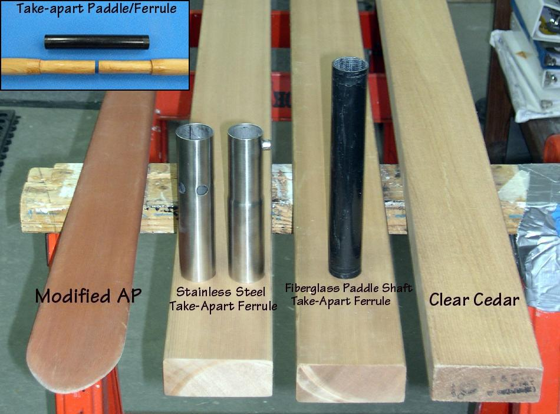

| Take-Apart Paddle Construction | Menu Previous Page Next Page |
|
 A take-apart paddle is constructed the same as a standard paddle, with the ferrule being added after the paddle blank is cut in two at the center of the loom. Pictured above are the basic elements of a take-apart paddle. Commercial stainless steel (ss) or carbon fiber (cf) take-apart ferrule's are made in 2-pieces. Each side attaches to the loom, telescopes together, and are locked in place with a spring-pin. The Commercial ss 2-piece ferrule above was purchased from Chesapeake Light Craft (CLC) and cost $22.00. The more expensive, and lighter, cf ferrule's cost nearly twice as much. As an inexpensive alternative, this paddle will be constructed using a one piece ( 8") section of fiberglass paddle shaft. This method is much less expensive , just as durable, and very light weight. The paddle shaft ferrule is fitted to the loom and held in place with plastic electrical tape. The plastic tape keeps the ferrule from rotating, and prevents water from entering between the loom and ferrule. One end of the ferrule can be glued in place, but this adds 4" in length for storage and transport. An alternative method is to use an 8" section of 1.25"OD ( .049 - .058 wall) aluminum tubing |
|